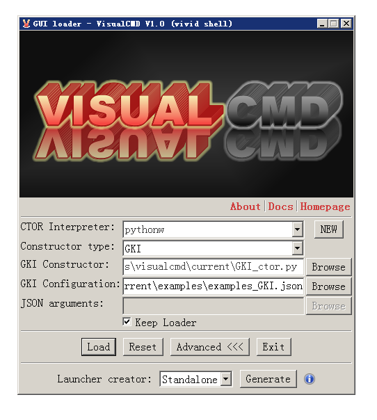
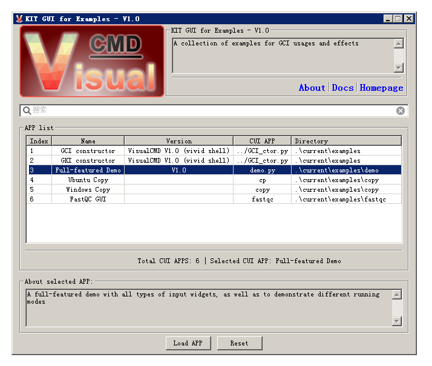
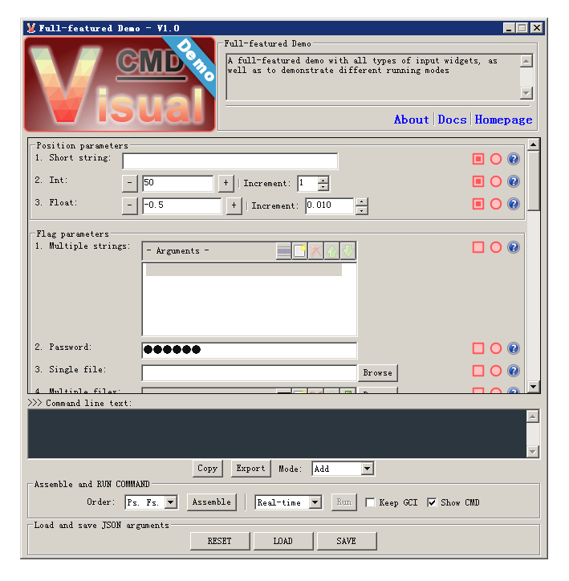
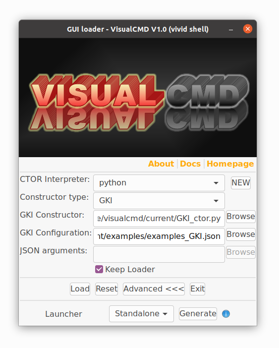
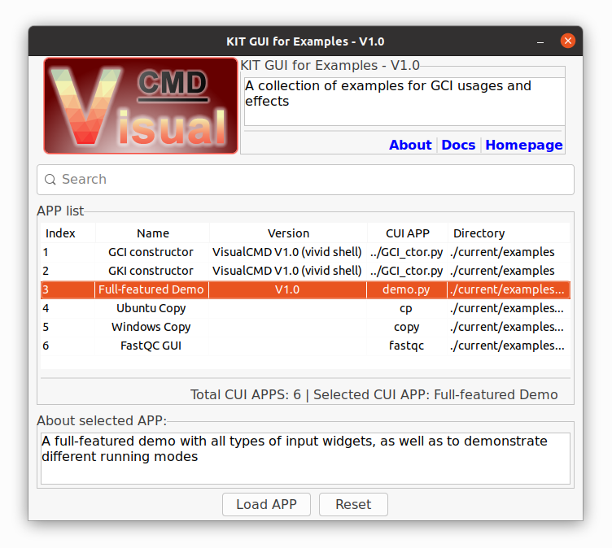
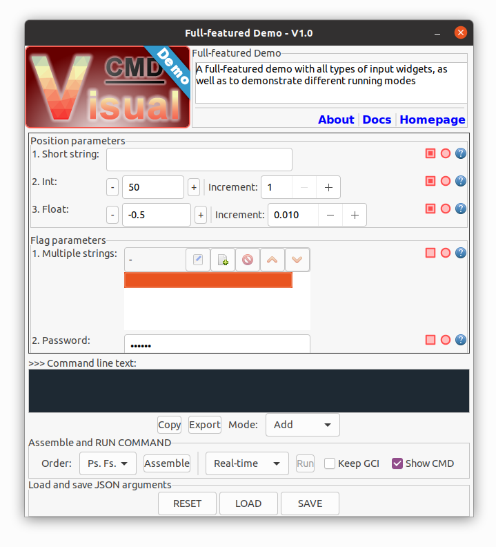

-
What does VisualCMD do?
VisualCMD provides a solution to automatically generate a GUI for:
(1). a collection of multiple CUI applications;
(2). a CUI application (with arguments);
(3). a system-level CMD (with arguments);
WITHOUT any change of the existing applications;
ONLY requires a JSON-based configuration file.
-
Highlighted features
Core GUI constructors are designed as single-files (with default images embedded), and can be used as standalone tools;
Defines and supports multiple input widgets (including basic string, int, float, range, file, folder and colour);
Auto formating and validating inputs (such as date, time, url and string length);
More input types and validations can be customized via regular-expression patterns;
Supports customized splash, icon, logo and waiting images;
Supports argument with multiple values;
Supports exclusive arguments;
Running of CMDs via multiple modes: realtime (displaying output), background (displaying waiting image) and unattended (non-interactive);
CMD and arguments can be saved and loaded;
Supports multiple operating systems;
-
Installation
(1) . Required environments:
Python 3.x, with pip
(2). Install wxPython for GUI supports
Recommended version: 4.x
For Windows:
| >>> pip install -U wxPython |
For Ubuntu 20.04:
>>> pip install -U -f https://extras.wxpython.org/wxPython4/extras/linux/gtk3/ubuntu-20.04 wxPython
#for libsdl supports, if needed
>>> sudo apt-get install libsdl2-2.0
>>> sudo apt-get install libsdl2-dev |
*For other Linux distributions, please find the correct versions from: https://extras.wxpython.org/wxPython4/extras/linux/
See: https://www.wxpython.org/pages/downloads/
-
Development and testing environments
(1). VisualCMD was developed and tested under Windows OS:
Windows 7 Ultimate, 64bit; Python 3.8.10; wxPython 4.1.1
*Note: there may be "unsupported locale setting" issue under Windows due to the compatibility of wxPython. However, this issue does not affect the overall functionalities.
GUI snapshot for Windows:
The main entrance (GUI_loader):
 |
Demo KIT-GUI for the examples:
 |
Demo APP-GUI for the full-featured demo:
 |
(2). SeqWIz was aslo tested under Ubuntu OS:
ubuntu-20.04.2.0-desktop-amd64; Python 3.8.10; wxPython 4.1.1
*Note: there may be "Gtk-WARNING" issue under Ubuntu due to the compatibility of wxPython. However, this issue does not affect the overall functionalities.
GUI snapshot for Ubuntu:
The main entrance (GUI_loader):
 |
Demo KIT-GUI for the examples:
 |
Demo APP-GUI for the full-featured demo:
 |
-
Usage
(1). Prepare customized images (splash, icon, logo, wait), if needed;
(2). Create a configuration file (JSON based) for the GUI;
*There are two types configuration, as shown in the examples: *_GKI.json for a KIT, and *_GCI.json for a CUI-APP or system CMD.
(3). Use the GUI_loader to directly launch the GUI shell or create a standalone / shortcut launcher;
(4). The image files, JSON configuration file and the standalone launcher can also be distributed in your project as a GUI supporting;
-
Current version
VisualCMD V1.0
Code name: vivid shell
-
License
This project follows the GNU General Public License (version: 3.0).
See: https://www.gnu.org/licenses/gpl-3.0.en.html
|